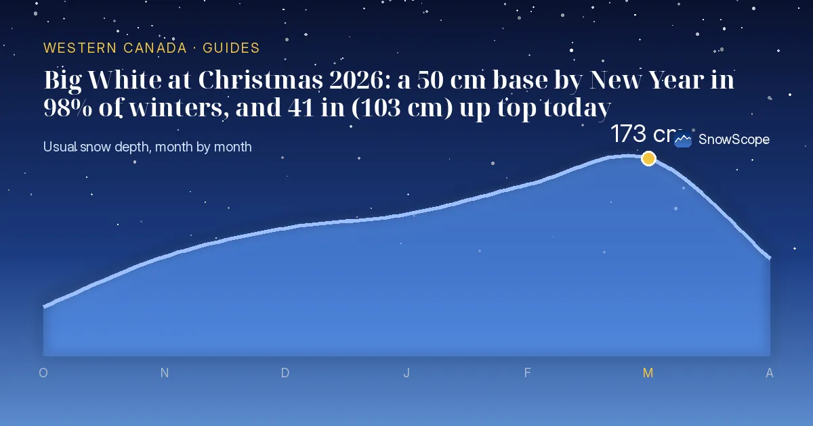
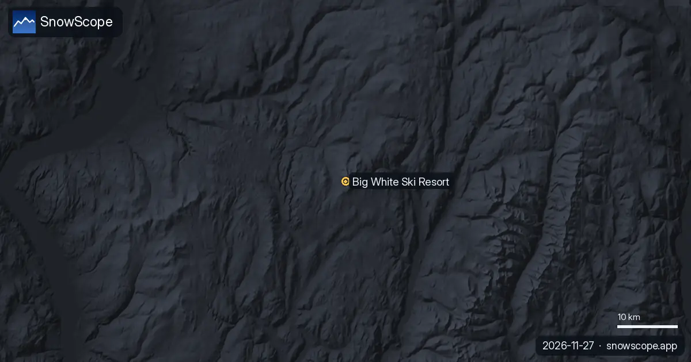

Big White at Christmas 2026: a 50 cm base by New Year in 98% of winters, and 41 in (103 cm) up top today
Big White is about as safe as Christmas skiing gets in Canada: in 98% of 46 winters the mountain had more than 50 cm (20 in) of snow at 6,207 ft (1,892 m) by New Year. Today the upper slopes carry 41 in (103 cm), a solid start, even if the mid-mountain base of 13 in (34 cm) is still under the 22 in (57 cm) that is usual for late November.
See the live snow forecast for Big White Ski Resort in the SnowScope appSnow depth, powder alerts and the 3D map, free.

The Christmas numbers
On December 25 the usual depth at 6,207 ft (1,892 m) is 32 in (81 cm); one Christmas in four has less than 28 in (71 cm), one in four more than 38 in (96 cm). By mid-December a 50 cm base was there in 96% of winters. The spread between good and poor years is narrow here, which is what makes Big White reliable: cold, steady storms rather than big boom-and-bust cycles.
The biggest winter of the 46 peaked at 6.6 ft (200 cm) (2017-18); the leanest still reached 41 in (105 cm) (2018-19).
Where the snow stands now
The upper slopes have 41 in (103 cm), with 5 in (13 cm) in the past week. The next three days add about 2 in (5 cm), enough to freshen the groomers. The base village sits high, at 4,961 ft (1,512 m), so the snow reaches the doors of most lodging from the first weeks of the season.
The Big White snow page has the daily numbers for the base, mid-mountain and top.
Planning a family Christmas week
Big White is built as a ski-in ski-out village, which is the main reason families choose it for the holidays: no daily drive, short walks to the lifts and night skiing in the evening. The trade-off is fog: the mountain is known for low cloud, so bring goggles with a light lens and plan tree runs, where visibility is better, on grey days.
Kelowna airport is the gateway, about an hour's drive; shuttles run from the airport in season.
Non-skiers are well served too: the village has a tube park, skating and snowshoe trails, which makes it easier to mix ages and abilities in one holiday week. Most of the beginner terrain sits close to the village centre, so younger children rarely need a lift ride to reach their lessons, and parents can ski the upper mountain in between.
A week at Big White, by the calendar
The holiday fortnight is well covered by history. The usual depth at 6,207 ft (1,892 m) is 31 in (78 cm) on December 20, 32 in (81 cm) on Christmas Day and 33 in (85 cm) on December 31. Snow lay on the ground on Christmas Day at that height in 100% of winters.
The comparison with the coast is interesting this year: Whistler's upper slopes are far deeper after the late-November storm, but Big White's snow is colder and drier, and its village sits 4,961 ft (1,512 m) up, well above Whistler Village. For families, that height matters more than the total.
Book the second week of the holidays if you can: the first days after Christmas are the busiest, and the snow is usually deeper by New Year.
If December starts slowly
Even a thin December rarely leaves Big White short at Christmas: the usual New Year's Day depth is 33 in (85 cm), and the poorest one winter in ten still shows about 29 in (73 cm).
Tips for skiers
- Book ski-in ski-out lodging early: it is the reason most families come, and it sells first.
- Pack a low-light goggle lens for the famous Okanagan fog.
- Book lessons for the children before arriving; Christmas week ski school fills up.
- Compare more Christmas resorts on our Christmas skiing page and the Western Canada snow hub.
About these numbers
Snow numbers: SnowScope's snow map and forecast for today, and our record of 46 past winters at each resort (an estimate for the area, not the resort's own report).
Official avalanche bulletins: Avalanche Canada
Cite this report
For research, teaching or the press: the numbers and charts are free to reuse under CC BY 4.0 with this citation.
SnowScope (2026), Big White at Christmas 2026: a 50 cm base by New Year in 98% of winters, and 41 in (103 cm) up top today, https://snowscope.app/blog/en/2026/11/big-white-christmas-2026-snow-odds-okanagan-champagne-powder.html, accessed 2026-11-27
SnowScope (Atlas Labs). (2026, November 27). Big White at Christmas 2026: a 50 cm base by New Year in 98% of winters, and 41 in (103 cm) up top today. SnowScope snow reports. https://snowscope.app/blog/en/2026/11/big-white-christmas-2026-snow-odds-okanagan-champagne-powder.html
BibTeX
@misc{snowscope2026bigwhitechristmas2026sno,
author = {{SnowScope (Atlas Labs)}},
title = {Big White at Christmas 2026: a 50 cm base by New Year in 98% of winters, and 41 in (103 cm) up top today},
year = {2026},
month = nov,
howpublished = {\url{https://snowscope.app/blog/en/2026/11/big-white-christmas-2026-snow-odds-okanagan-champagne-powder.html}},
note = {Published 2026-11-27 19:42 UTC; accessed 2026-11-27}
}· CC BY 4.0 · Methods, data and tools →
Big White Ski Resort: snow and temperature by height, this winter vs last (tools) →
Follow Big White Ski Resort
Free: a message when fresh snow is coming, and the forecast every morning.
More snow reports

Whistler Blackcomb has 136 cm on upper slopes this weekend, but snow thins fast below 1500 m. Plan runs by elevation. Data from 19 November.

Whistler Blackcomb leads Western Canada with 153 cm on upper slopes. Snow covers 398,620 km² across 52 of 57 resorts on 22 November.

Mount Washington Alpine Resort has 104 cm on upper slopes today. Whistler Blackcomb leads the region with 136 cm. Data from 18 November 2026.